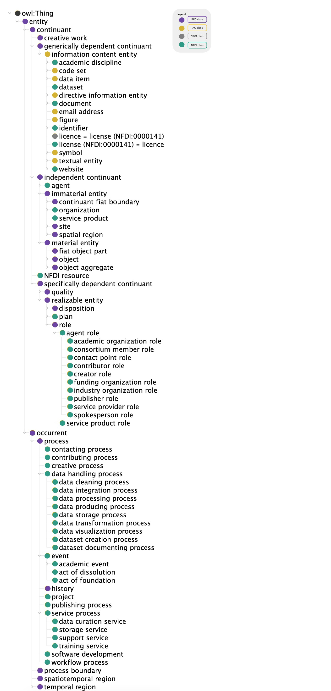

Ontology
The NFDI Ontology is a mid-level ontology designed to represent both the organizational structure of the Nationale Forschungsdateninfrastruktur (NFDI) and the diverse datasets provided by NFDI project partners.
Overview
The ontology provides a shared vocabulary and a consistent framework that supports data management, integration, and interoperability across a wide range of disciplines. Below is an overview of key concepts within the ontology. The complete list of concepts can be found in the generated ontology description: https://nfdi.fiz-karlsruhe.de/ontology/.
Key Concepts
Organizational
- Organization: Represents institutions, research groups, or companies involved in NFDI activities.
- Person: An individual, such as a researcher or contributor, participating in NFDI projects.
- Consortium: Represents collaborative groups formed by multiple organizations within the NFDI.
- ConsortiumMember: A participant within a consortium, whether an organization or person.
- ConsortiumMemberRole: Defines the roles played by members within a consortium, such as "lead partner" or "contributor"
- Project: Represents individual research projects or initiatives within the NFDI ecosystem.
Research and Academic
- AcademicDiscipline: Categories representing different fields of study or research disciplines.
- Publication: Scholarly works or research reports published as a result of NFDI projects.
- Contributing: Represents contributions made by people or organizations to a project or dataset.
- Event: Represents events such as conferences, workshops, or meetings organized by NFDI or related entities.
Geographical
- City: Represents cities related to projects, events, or organizational locations.
- Country: Countries where NFDI organizations or research activities are based.
- FederalState: States or provinces within a country, relevant to the localization of activities or organizations.
- Place: A more general class representing any location such as cities, countries, or regions.
Data and Information
- Dataset: Structured collections of data produced or managed by NFDI partners.
- Data Portal: Digital platforms or repositories where datasets are stored and accessed.
- Collection: Represents grouped resources, such as datasets, publications, or software.
- CreativeWork: Any intellectual output, including publications, datasets, software, or media.
Technology and Standards
- Software: Represents software tools or applications developed and used within the NFDI.
- Programming Language: Programming languages used in developing software or tools.
- Specification: Defines technical specifications related to datasets, software, or services.
- Standard: Represents standards followed for data management, storage, and dissemination.
- Technological Method Specification: A technological method employed for the creation, management, utilization, or control of a digital resource.
- Ontology: Formalized structures of knowledge representation, including the NFDI Ontology itself.
NFDI Resource and Service
- NFDI Resource: General class for any entity utilized within the NFDI framework, such as datasets or software.
- Service Process: Organizes activities and resources to deliver a specific service, ensuring its efficiency, reliability, and alignment with intended goals.
- Service Product: Provides value through a service offering, delivering intangible benefits or functionality designed to fulfill specific needs or requirements in a structured process.
- License: Represents the legal terms under which datasets, publications, or software are made available.
- Website: Represents websites or web services associated with NFDI partners or projects.
Formats
- MIME-Type: Serves as a standardized identifier for specifying the nature and format of data.
- Export Format Specification: Defines the structural, syntactic, and encoding rules for representing data when it is exported from a system.
Class Hierarchy
The image below illustrates the top-level hierarchy of the ontology (Version 3.0.0). Most NFDIcore classes have been defined as subclasses of Basic Formal Ontology (BFO), Information Artifact Ontology (IAO), or the Software Ontology (SWO).
Since BFO 2020 — the version currently adopted by NFDIcore — is not fully supported by IAO, some relevant IAO concepts could not be reused. In such cases, NFDIcore-specific classes have been introduced, such as dataset, document and identifier.

BFO as top level ontology
The Basic Formal Ontology (BFO) is a top-level ontology that provides a structured framework for organizing entities based on their fundamental nature. It does not include domain-specific content but instead defines high-level categories that support the development of specialized ontologies like NFDIcore.
BFO distinguishes entities based on whether they persist through time or unfold over time, dividing them into continuants and occurrents (see image above).
Continuants (Endurants)
Continuants are entities that exist at any given moment in time and maintain their identity over time. There are tree kinds of continuants: independent continuants, generically dependent continuants and specifically dependent continuants.
Independent Continuants (IC)
These are entities that exist independently and do not require another entity to exist.
- Material Entities – Physical objects with spatial extension.
- Examples: Organisms, buildings, tools.
- Immaterial Entities – Boundaries or parts of objects defined by human convention.
- Examples: The equator, the upper half of a sphere.
Generically Dependent Continuants (GDC)
These entities depend on independent continuants for their existence.
Generically dependent continuants can exist in multiple instances or be replicated across different locations.
- Examples:
- A book’s content (as opposed to a single physical copy of the book)
- A software program (which can be installed on multiple computers)
- A musical composition (which can be played on different instruments)
- A dataset and data items
- Entities with information content
Specifically Dependent Continuants (SDC)
Specifically dependent continuants are qualities, roles, or dispositions that exist only in relation to a particular independent continuant. They cannot exist independently and must always be inherent in something else.
-
Qualities - Intrinsic properties of an independent continuant. They describe how an entity is at any moment in time.
- Examples: The color of a leaf, the weight of a person, the temperature of a liquid.
-
Roles - Situational properties that an entity has based on context or social convention.
- Examples: The role of a teacher, he status of a patient in a hospital, the role of a machine undergoing maintenance.
-
Dispositions and functions - Potential behaviors or tendencies that an entity has, even if they are not currently being realized. Functions are dispositions that represent the particular purpose of something.
- Examples: The fragility of glass (it might break if dropped), the solubility of salt (it dissolves in water), a person’s ability to speak multiple languages, the function of an oven to heat something up, the function of a screwdriver to turn screws in and out.
Occurrents (Perdurants)
An occurrents is an entity that unfolds itself in time or it is the start or end of such an entity.
Processes
Processes are dynamic activities with temporal duration.
- Examples: A running event, a chemical reaction, cell division.
Temporal Regions
These represent divisions of time.
- Examples: A second, an hour, a historical period.
Spatiotemporal Regions
These combine space and time into a single entity.
- Examples: The path of a moving object, the trajectory of a planet.
Relations in BFO
BFO defines formal relationships between entities to maintain consistency. Some key relations include:
- continunat part of – Indicates compositional relationships. (Example: A wheel is part of a car.)
- occurent part of - Some process has another process as part. (Example: A conference event has multiple workshop events.)
- located in – Specifies spatial containment. (Example: A book is located_in a library.)
- bearer of – Assigns specifically dependent continuants to independent continuants. (Example: A teacher is the bearer of the educator role.)
- has participant - Assigns continuants to processes. (Example: A student participates a lecture event.)
More information about BFO can be found at the GitHub repo and the documentation page.